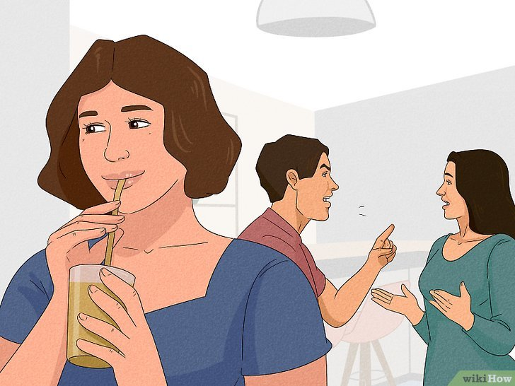

Minding ones business is a lot of fun. It is one of the sources of peace of mind the world needs today. I like to mind my busines because its the only business you can start without needing any capital
To know more about how to mind your own business, click here
Here you can see a wise lady minding her own business while a couple is having an argument
Here are some items you need for this activity and their prices
| Item required | Price |
| Your nose on your face | Free |
| Space | Free |
| Outside other people's matter | Free |